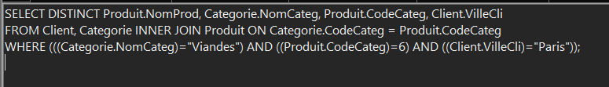

Contexte
Cette mission implique l’exploitation de la base de données de KDou via une interface low-code, en l'occurrence Access. L'objectif est d'extraire et d'analyser des indicateurs clés pour comprendre les performances et les données de l'entreprise.
Présentation des Indicateurs
Voici 4 exemples d'indicateurs intéressants :
Indicateur 1 : Les produits d’Italie ou d’Allemagne vendus 50€ ou moins
Interprétation : Permet à KDou d’identifier les produits abordables provenant d'Italie ou d'Allemagne. Ces produits, vendus à un prix attractif, peuvent répondre aux besoins des clients soucieux de leur budget. Cela peut aussi indiquer des catégories de produits où KDou a un avantage compétitif dans ces pays. Si ces produits connaissent une forte demande, il peut être intéressant pour KDou de renforcer ses relations avec les fournisseurs de ces régions pour augmenter l’approvisionnement ou diversifier l’offre dans cette gamme de prix
Résultat
Tableau :
Code SQL :

Indicateur 2 : Les produits de type viande livrés à Paris
Interprétation : Cet indicateur permet à KDou d’identifier spécifiquement les produits de type viande qui sont livrés à Paris. Cela peut être utile pour analyser les préférences des clients parisiens pour des produits frais ou d'origine locale. Si la demande pour ce type de produit est élevée, KDou pourrait envisager d'augmenter le stock de viande pour cette région ou de proposer de nouveaux produits similaires pour répondre aux préférences locales. Par ailleurs, cela pourrait aider à optimiser la chaîne logistique en assurant que les fournisseurs sont capables de répondre à la demande parisienne avec des délais de livraison adaptés.
Résultat
Tableau :
Code SQL :
Indicateur 3 : Nombre de fournissaurs pour chaque fonction
Interprétation : En examinant le nombre de fournisseurs par fonction (par exemple, « chef des ventes », « directeur marketing »), KDou peut mieux comprendre les types de profils qui travaillent avec eux. Cela peut être révélateur de la taille ou de la spécialisation de chaque fournisseur. Par exemple, un grand nombre de « chefs des ventes » pourrait indiquer des relations principalement commerciales, tandis qu'une proportion de « directeurs marketing » pourrait signaler une collaboration plus stratégique. KDou peut ainsi ajuster ses interactions en fonction de la fonction des contacts, par exemple en renforçant les échanges commerciaux avec les « chefs des ventes » ou en sollicitant davantage les « directeurs marketing » pour des stratégies de promotion et de co-marketing.
Résultat
Tableau :

Code SQL :
Indicateur 4 : Nombre de produits que chauqe fournisseur propose en bouteille
Interprétation : Cet indicateur aide KDou à évaluer la contribution de chaque fournisseur dans la gamme de produits en bouteilles. Cette information est cruciale si les produits en bouteille, comme les boissons, sont des articles populaires. KDou peut ainsi identifier les fournisseurs les plus engagés dans ce type de conditionnement, ce qui pourrait influencer des décisions d'approvisionnement en faveur de fournisseurs fiables. De plus, si certains fournisseurs proposent peu de produits en bouteille, il pourrait être intéressant de les encourager à diversifier leurs offres pour répondre à des tendances de consommation orientées vers ce type de conditionnement.
Résultat
Tableau :
Code SQL :